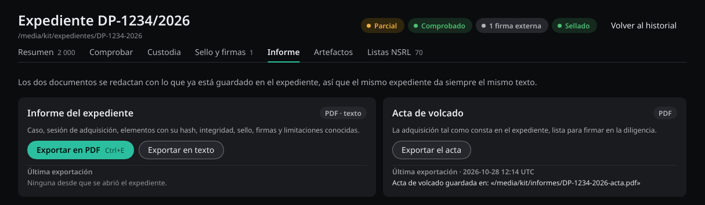

El expediente
| Fichero | Contenido |
|---|---|
manifest.json | Inventario: hash SHA-256,
tamaño, origen y estado de cada elemento; el hash de
case.json y de preflight.json; y el hash del
último asiento de la auditoría en el momento de cerrarlo. |
audit.jsonl | Registro de auditoría encadenado por hash. |
case.json | Caso, operador, habilitación y alcance autorizado. |
preflight.json | Estado del equipo al adquirir, con fabricante, modelo y número de serie de cada disco, la licencia y el hash del ejecutable de Foruster. |
raw/ | Los datos recogidos: ficheros, imágenes y volcados de memoria. |
manifest.sig, signature.json | Firma Ed25519 del manifiesto y quién la hizo, si se ha firmado. |
manifest.tsr, timestamp.json | Sello de tiempo del manifiesto, si se ha sellado. |
external-signatures/ | Firmas hechas fuera de Foruster, si se han adjuntado. |
Un elemento que falla deja el expediente en parcial, y eso consta en el manifiesto, en la auditoría y en el informe. No hay forma de que pase desapercibido.
El manifiesto vincula los datos del caso y el estado del equipo: si
case.json o preflight.json cambian, la
comprobación falla.
Un resultado correcto de verify significa que el expediente
está íntegro, no que la adquisición esté completa. El estado de la sesión
se indica aparte.
Informe
foruster-cli report /casos/EXP-1-2026
foruster-cli report /casos/EXP-1-2026 --pdf --output informe.pdf
El mismo expediente produce siempre el mismo documento, porque solo se lee lo que
ya está guardado. Lleva una sección de limitaciones con las
salvedades que afecten a ese caso concreto. --pdf necesita
--output.
El informe no se escribe nunca dentro del expediente. Tampoco sustituye un
fichero que ya exista, salvo que añadas --force.
Del mismo expediente sale también el acta de volcado.

Paquete de diagnóstico
Si algo falla y quieres que lo revisemos, diagnostics escribe
un fichero JSON con la versión, la plataforma, los códigos de error y los
recuentos. Solo lleva códigos, recuentos e indicadores de una lista
cerrada: ningún texto libre, ni rutas, ni nombres de fichero, ni datos
del caso. Foruster no lo envía a ningún sitio. Revísalo antes de
entregarlo.
foruster-cli diagnostics --container /casos/EXP-1-2026 --output diagnostico.json